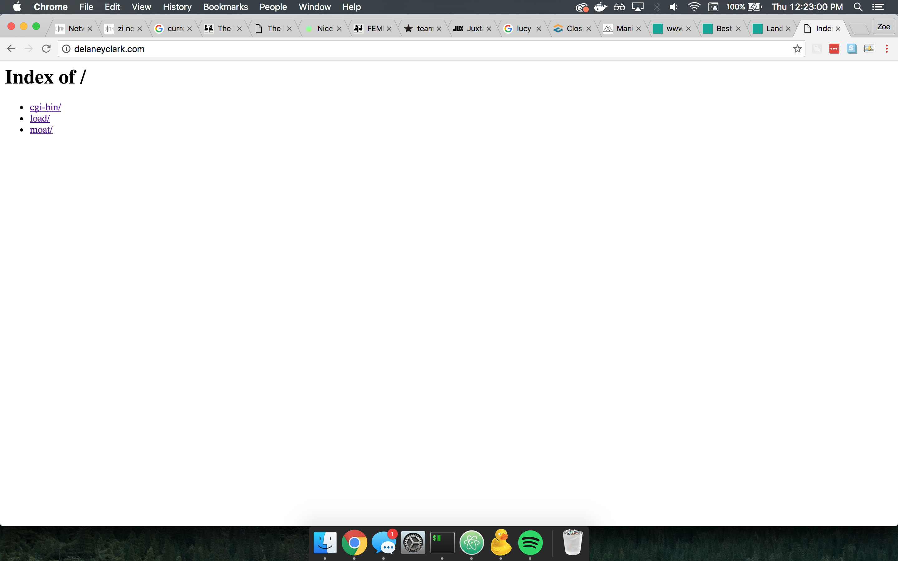
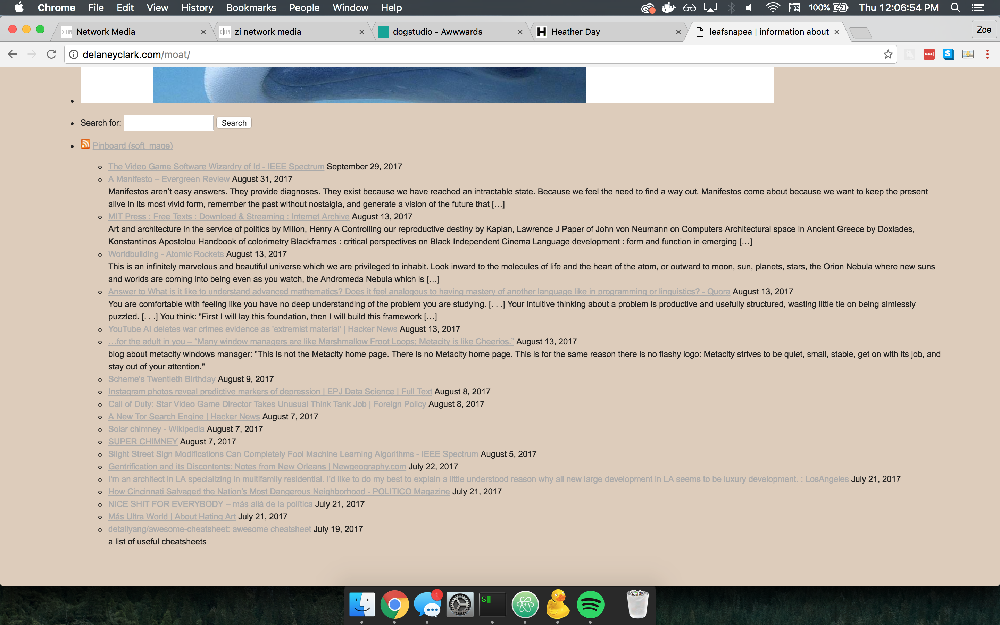
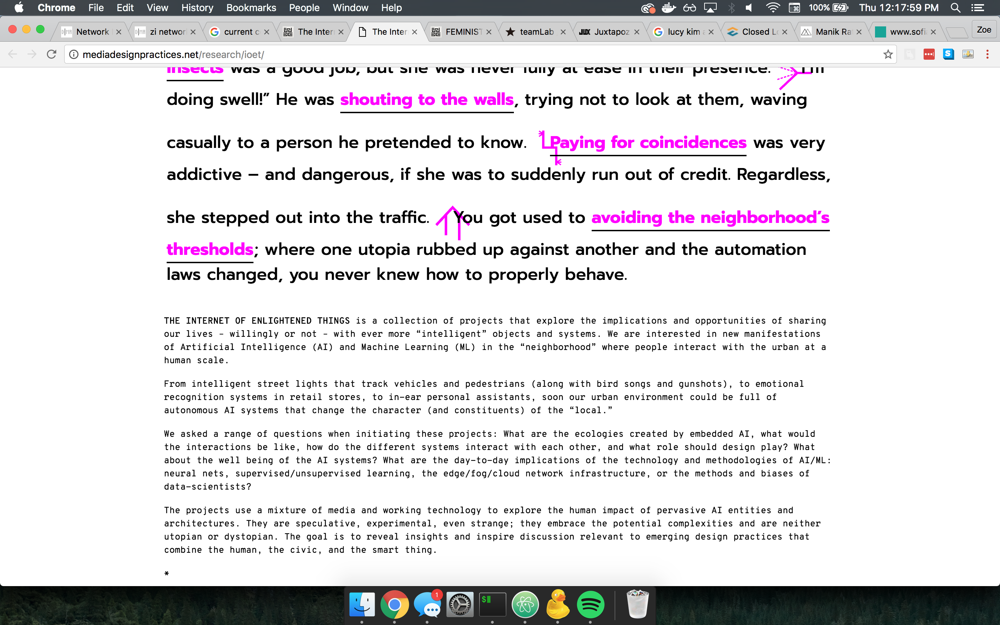
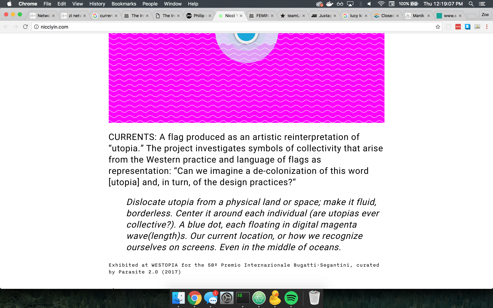
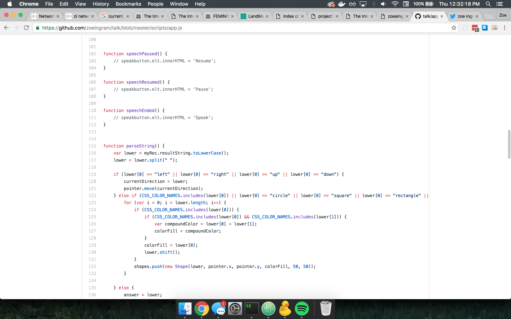
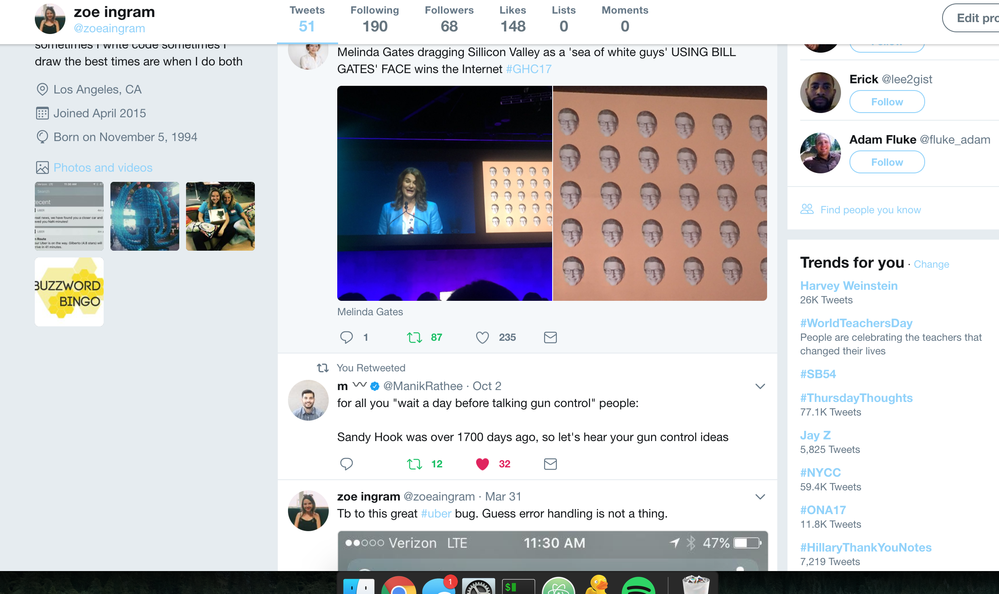
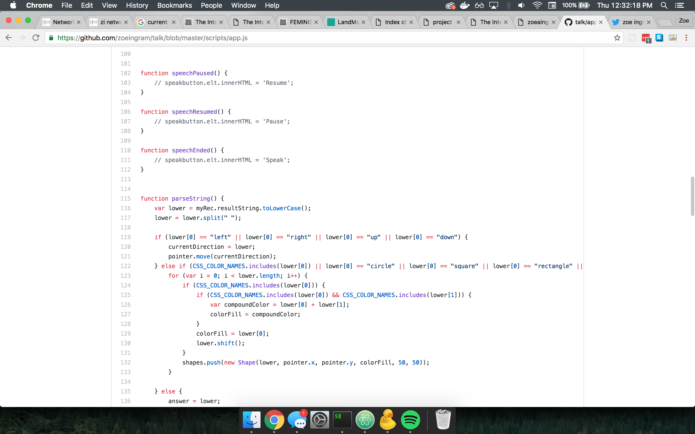
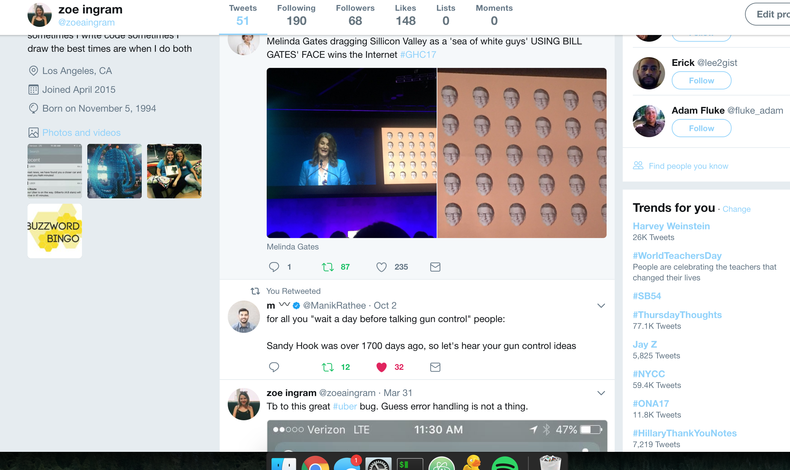

website inspiration
-
Delaney Clark

I like the use of (almost) unstyled html, and pure text to just show what's neccessary for people looking at her work/writing.
- The Internet of Enlightened Things
I like the use of link styles and color to carry the reader through a big chunk of text, and the illustrations make it playful.
- Nicci Yin
Follows a lot of the concepts in the Frank Chimero essay, use of multiple kinds of text and color.
-
Ivy Park

I love the use of music and forced user interaction to navigate the site.
 


